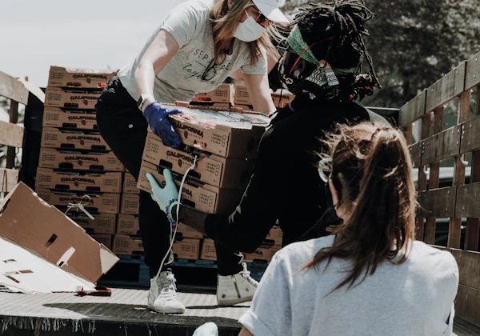
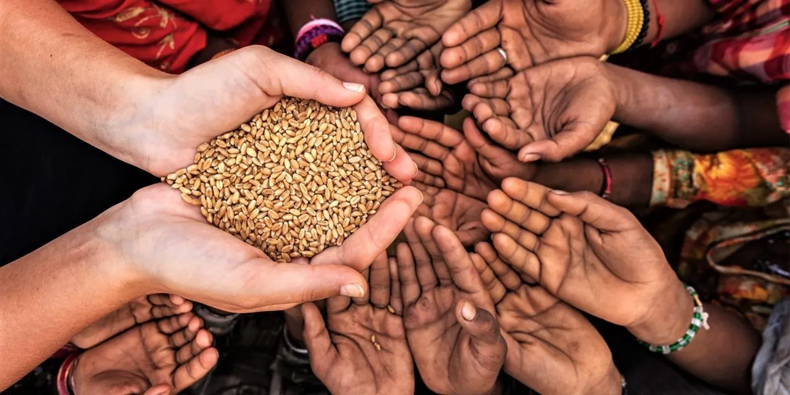
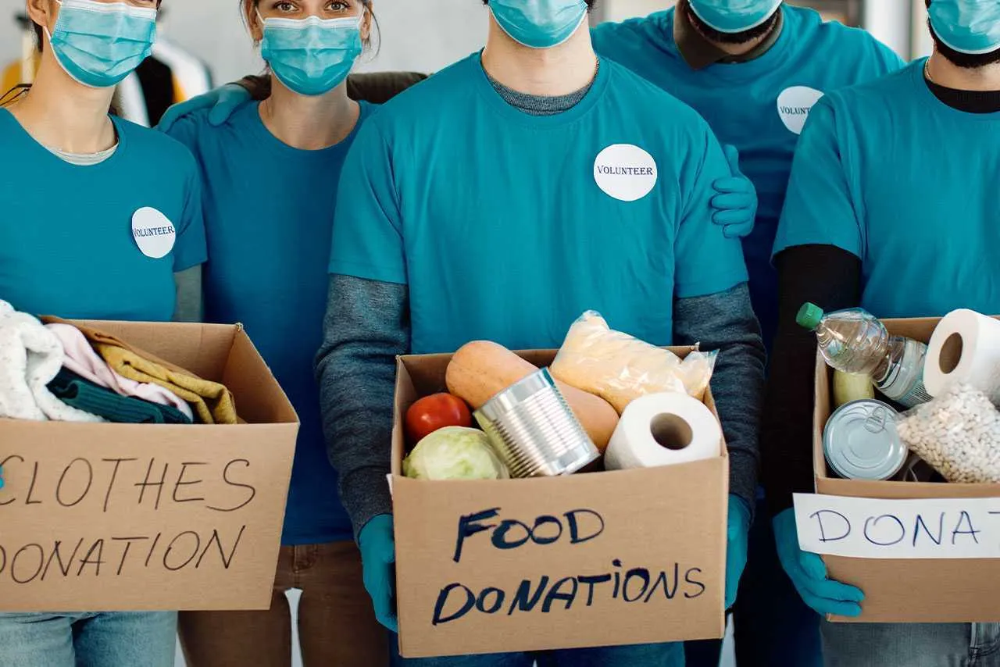
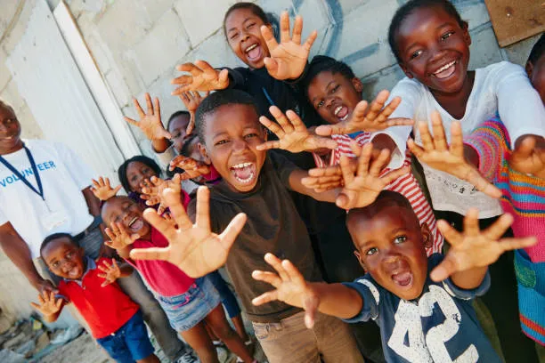
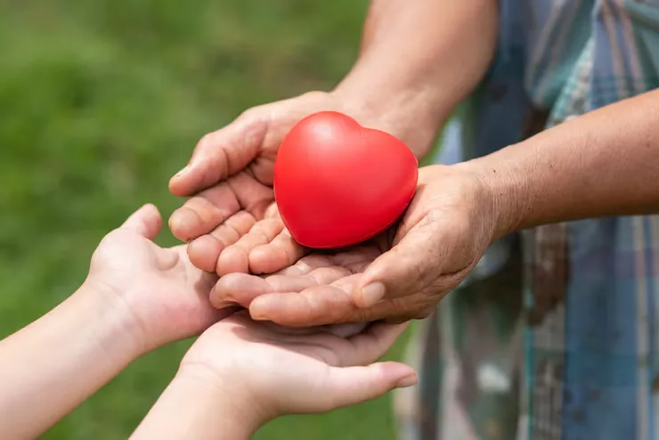
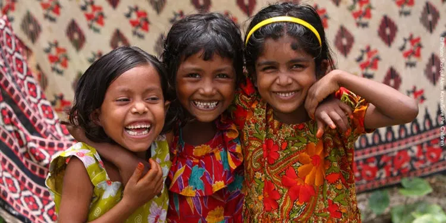

Water
The well that started everything
Bongo, Ghana — 2012. The very first frame in this album, taken minutes after clean water reached the village for the first time.
Read the water storyReal people, real places, real progress — every photo below is GPS-pinned, donor-funded and free of filters that lie. Tap any moment to step inside it.
Filter by program — then open any frame full-screen. What you see is what donors built.








A single frame can hold a whole year of work. Here are three moments that started something much bigger.
Bongo, Ghana — 2012. The very first frame in this album, taken minutes after clean water reached the village for the first time.
Read the water story Education
Education
Dhaka, Bangladesh — 2019. Forty-two students, one chalkboard, and a promise that no child would ever be turned away.
Read the education storyChittagong, Bangladesh — 2023. A mobile clinic that turns a six-hour walk to the nearest hospital into a fifteen-minute wait.
Read the health storyFollow the album from one village well to thirty-two countries — every milestone photographed as it happened.
The Bongo well is completed in Ghana and photographed the same afternoon — the first image in the Stackly archive.
The 100 Wells Challenge wraps across three countries. Each finished well gets a portrait of the community it serves.
Education launches with 14 local ministries. The first Dhaka classroom photo is still one of the most shared images we have.
Mobile health units reach communities the map used to forget, and the gallery gains its first clinic-day series.
A river clean-up in Portland becomes the thousandth photo archived — GPS-pinned, donor-funded and published the same day.
The album keeps growing, and every new frame still answers the same question: what did generosity build here?
A photograph is a person's story before it is our fundraising. These are the rules our field teams never break.
No photo is taken or published without a signed release. Families can withdraw a frame at any time, no questions asked.
We don't direct smiles, move furniture or smooth reality. What you see is the field on an ordinary day.
Each frame carries a place, a date and the program behind it — so a picture can never be spun into a story it isn't.
“Every photo in this gallery is a receipt. Not one of them would exist without someone deciding their Tuesday was worth someone else's lifetime.”

Fund a program, join a build weekend or simply share this gallery. Every action adds a frame.